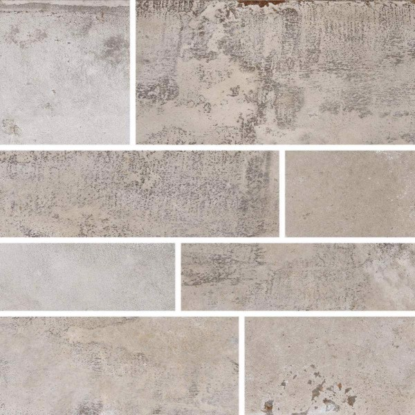
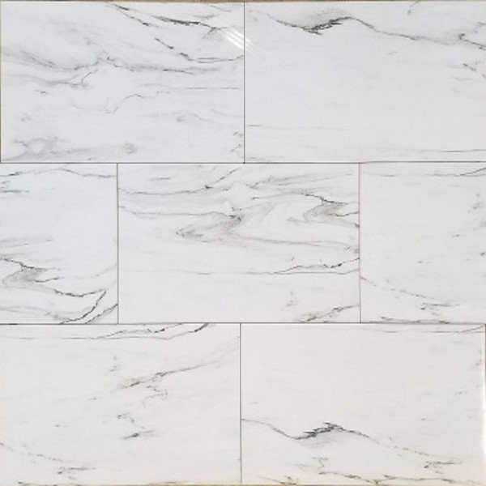
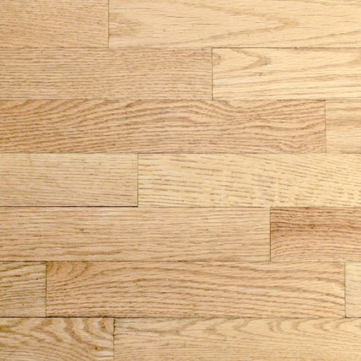
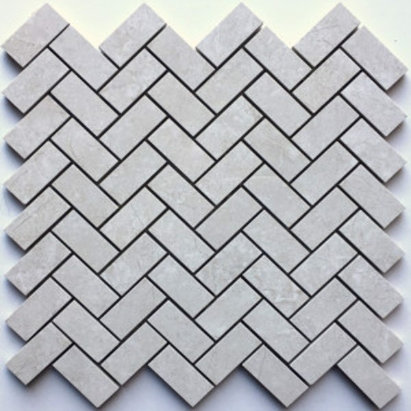
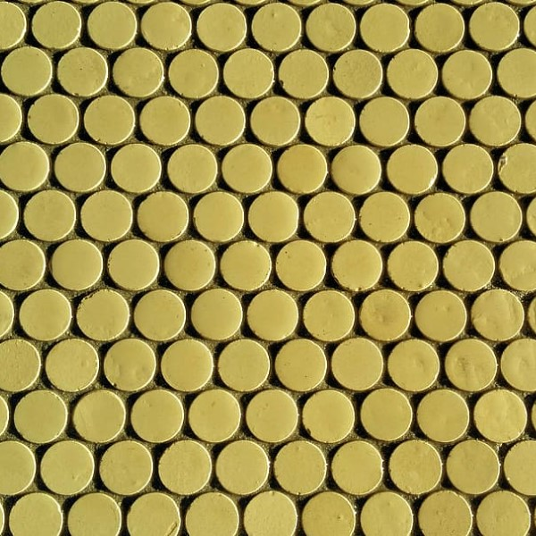

One of the most important spaces in a home is the Kitchen because it is considered to be the heart of the home. Here at My Kitchen Place we take this oportunity very seriously and do our best to help you get the best design to cover your family's needs with a great taste and style.
My Kitchen Place’s skilled designer will come to your home, measure your kitchen and provide style, layout and materials advice as well as show you samples of our products.
Whether you just want to replace your kitchen cabinets or redesign your entire kitchen, just give us a call. My Kitchen Place is Your Kitchen Place too!
Backsplash
Ceramic Tile
Ceramic tile is the most popular option for a kitchen backsplash. Ceramic tiles are incredibly versatile—they come in many shapes, sizes and colors and can be installed in numerous patterns.
Porcelain Tile
While ceramic tile is made by firing and glazing wet clay, porcelain tiles are made from compressed clay dust fired to high temperatures. Porcelain tile is not typically glazed, comes in fewer varieties and lacks the more decorative options of ceramic, but it is longer lasting.
Glass Tile

Glass can offer a unique backsplash thanks to the variety of shades, shapes and designs. In addition to different colors, shapes and patterns, glass tile also offers different levels of reflectivity: glossy, frosted, matte and iridescent, which is the newest type of finish that reflects all colors of light and is best for sunlit rooms.
Wood Tile
While not an obvious choice for a kitchen backsplash, wood options do exist. They are typically less expensive than most options, although they have drawbacks. Wood isn’t naturally waterproof, so if it’s not laminated then a special sealant needs to be used to make it a viable backsplash. With painting and staining, the appearance of a wood backsplash look is flexible, but it also requires ongoing maintenance to retain its look.
Peel-and-Stick Tile
Peel-and-stick backsplash is part of the home decor DIY trend. This type of tile is adhesive and is applied as a relatively temporary backsplash. (High-end options can last a few years.) It is typically vinyl though it is also available in materials like metal, glass and stone. Most peel-and-stick tile can be cut with scissors, though special materials require special tools.
Thermoplastic Tile
Thermoplastic panels can provide the look of a more expensive backsplash material. It is a durable option, and because of its relatively easy installation, it can be completed via DIY for handy homeowners. Because of its smooth surface it’s also easy to clean.